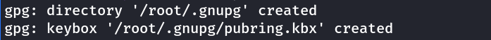
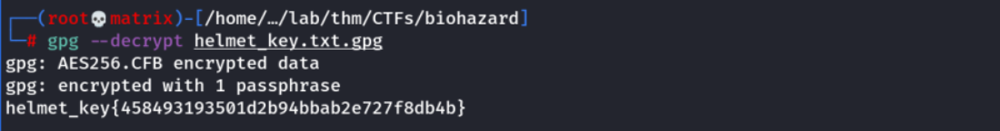
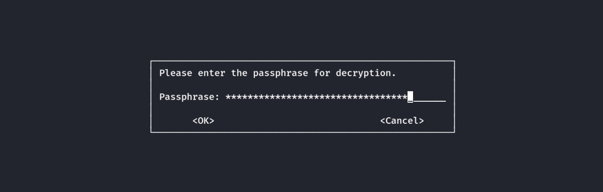
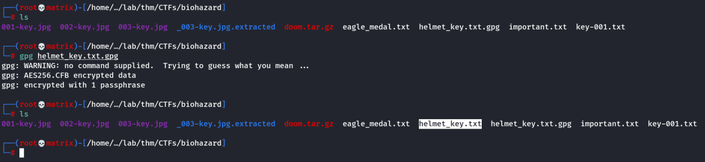
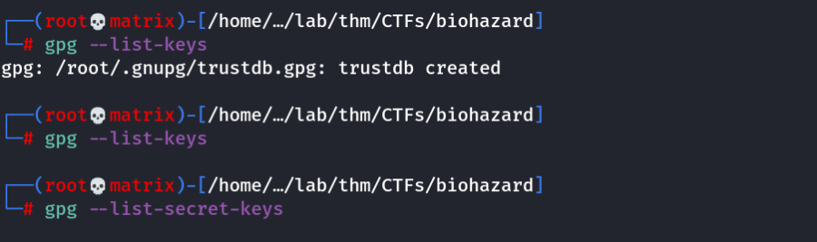
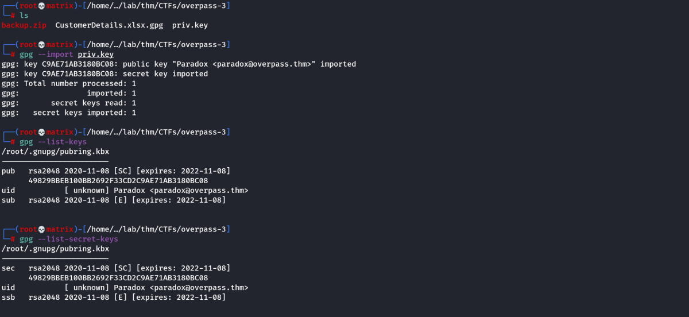
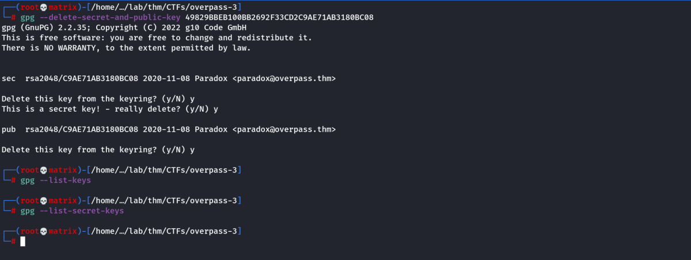
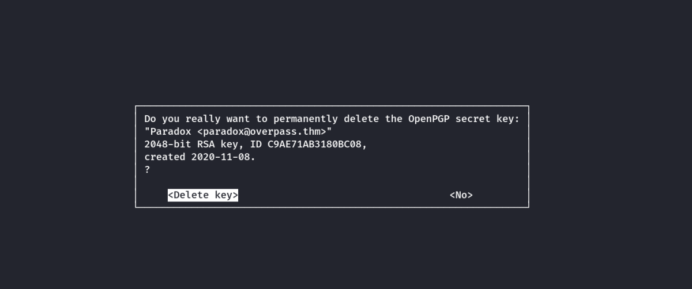
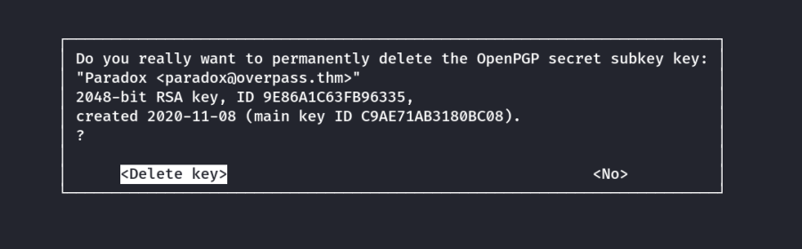

gpg
GPG Commands
For more details: man gpg
Whenever, we first run gpg we get the following messages.

Note: /root/.gnupg directory holds all the configuration files which we can delete if we need to reset.
Decrypt an encrypted file with a paraphrase
Example
Paraphrase : plant42_can_be_destroy_with_vjolt
GPG File: /home/cybex/lab/thm/CTFs/biohazard/helmet_key.txt.gpg
We can use the following commands to decrypt:
gpg --decrypt helmet_key.txt.gpg
Note: This --decrypt option will try to read the extracted file. (Similar to cat helmet_key.txt)

Once we enter the Paraphrase.

We get the message on the terminal. The decrypted file's content is read . NO new file is created/extracted.
or
gpg helmet_key.txt.gpg
Note: Giving no options will extract the file to the current directory.
Once this is run. The prompt will ask for paraphrase. Once we enter it. The file will be decrypted

Once we enter the Paraphrase.

The decrypted file is extracted to the current directory. See the highlighted.
We can then process the file further.
GPG Keys Basics
gpg --list-keys
gpg --list-secret-keys
The above shows all the keys that are currently imported by us.
Note: During First run trustdb will be created
1
Therefore to delete all keys and reset everything: rm -rf /root/.gnupg
To add keys from key_file
gpg --import key_file

Notice that once importing is done. We can use --list-keys and --list-secret-keys to show the details. (pub and sec keys)
Also we get the key_name : 49829BBEB100BB2692F33CD2C9AE71AB3180BC08
(Key_name same for both public and secret)
To delete individual keys
gpg --delete-keys key_name [Only pub key delete]
gpg --delete-secret-keys key_name [Only sec key delete]
gpg --delete-secret-and-public-key key_name [Both pub & sec key delete]

The process will ask for confirmation twice in a new window.


Decrypt an ecrypted file with a key
Example
KEY File: /home/cybex/lab/thm/CTFs/overpass-3/priv.key
GPG File: /home/cybex/lab/thm/CTFs/overpass-3/CustomerDetails.xlsx.gpg
gpg --import priv.key
gpg CustomerDetails.xlsx.gpg

We can see CustomerDetails.xlsx is extracted in the same folder. (As --decrypt option wasn't used)